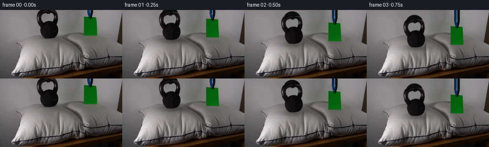
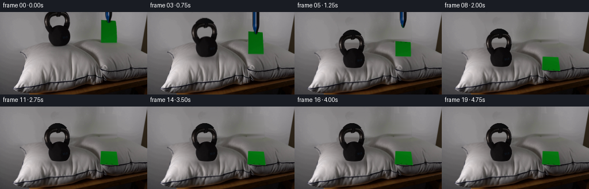

CODING AGENTS AS PIXEL WORLD MODELS
traex/GPT-6.1-Sol · 0193
点击播放 · 原生 RGB 像素
逐轮保存的候选
回放视频、检查图与代码变化。
每份候选均可单独播放。实际图片检查记录在下方工具轨迹中。
候选 01播放与检查图
点击播放 · 原生 RGB 像素


展开代码变化
--- 上一保存版本
+++ 本次保存版本
@@ -0,0 +1,196 @@
+from pathlib import Path
+import numpy as np
+import cv2
+from PIL import Image
+from scipy.ndimage import gaussian_filter
+import artifact_io
+
+ROOT = Path(__file__).resolve().parent
+I = np.asarray(Image.open(ROOT/'first_frame.png').convert('RGB')).astype(np.float32)
+H,W = I.shape[:2]
+Y,X = np.mgrid[:H,:W].astype(np.float32)
+
+def poly_mask(points, height=H, width=W, scale=4):
+ a=np.zeros((height*scale,width*scale),np.uint8)
+ cv2.fillPoly(a,[np.round(np.asarray(points)*scale).astype(np.int32)],255)
+ return cv2.resize(a,(width,height),interpolation=cv2.INTER_AREA).astype(np.float32)/255
+
+# Subpixel outlines of the two original objects. The hollow handle is preserved.
+left=[(83.3,0),(81.1,2),(79.3,4),(78.1,6),(77.2,8),(76.4,11),(76.3,16),(76.8,20),(77.5,23),(78.3,26),(79.2,28),(80.4,30),(81.1,32),(83,34),(84.4,36),(84.2,39),(83.5,41),(83.7,44),(84.5,47),(85.1,49),(86.2,51),(87.1,53),(88.3,55),(90.1,56.7),(92.7,58),(96.3,58.7),(103,59)]
+right=[(109,58.2),(113.6,57),(116.4,55.2),(118.1,53.5),(119.2,51.5),(120.3,49.5),(121.1,47),(121.7,44),(121.7,40),(121.3,37),(120.6,34),(119.6,32),(118.9,30.5),(119.6,28),(120,25),(120.6,22),(121.2,19),(121.3,16),(120.8,12),(120.1,9),(119.8,7),(119.1,5),(117.9,3),(116.5,1),(115.2,0)]
+km=poly_mask(left+right)
+hole=[(105.3,6.3),(109,7.5),(110.8,9),(112,11),(112.7,14),(112.5,17),(111.4,19),(110.5,21.5),(110,22.7),(108,23.1),(106.6,22.9),(101.8,22.3),(98.2,22.6),(95,24),(92,25.8),(90.4,26),(89.5,24),(87.8,22),(86.8,19.5),(86.5,16),(86.9,13),(87.7,10.5),(89.3,9),(91.5,7.8),(93.5,7),(97.4,7.1),(99.1,8.8),(101.7,8.3),(103.5,7.7)]
+km*=1-poly_mask(hole)
+# A softly lit wall and the rear edge of the same cushion exposed after lowering.
+clean=I.copy()
+for y in range(63):
+ if y<49:
+ a=I[y,72:76].mean(0);b=I[y,125:129].mean(0)
+ else:
+ a=I[y,79:83].mean(0);b=I[y,123:127].mean(0)
+ row=np.arange(73,129)
+ t=(row-73)/55
+ clean[y,row]=(1-t[:,None])*a+t[:,None]*b
+# Blend only within the removed silhouette and a small residual contact blur.
+erase=cv2.dilate((km>.01).astype(np.uint8),np.ones((3,3),np.uint8)).astype(np.float32)
+erase=np.maximum(erase,poly_mask([(88,56),(118,56),(122,60),(123,62),(86,62)]))
+erase=gaussian_filter(erase,.55)
+clean=I*(1-erase[...,None])+clean*erase[...,None]
+# Remove paper and its narrow blue/black holding clip from the background.
+pm=poly_mask([(175.3,13.3),(183,13.6),(200.4,15),(201.5,19),(202.8,32),(202.8,53.8),(175,54.5),(174.6,50.5),(175.6,38)])
+cm=poly_mask([(182.7,0),(195,0),(195.1,4),(194.7,7),(193.5,10),(192.7,13),(191.5,16),(190.5,19),(188,19.4),(186.2,17),(185.1,13),(184.2,10),(183.5,6)])
+remove=np.maximum(pm,cm)
+# The wall is nearly flat, with its original horizontal illumination gradient.
+patch=I.copy()
+for y in range(59):
+ a=I[y,168:172].mean(0); b=I[y,207:213].mean(0)
+ row=np.arange(173,207); t=(row-170)/40
+ patch[y,row]=(1-t[:,None])*a+t[:,None]*b
+rem=gaussian_filter(cv2.dilate((remove>.01).astype(np.uint8),np.ones((3,3),np.uint8)).astype(float),.5)
+clean=clean*(1-rem[...,None])+patch*rem[...,None]
+# The cast shadow under the sheet moves away from its original suspended position.
+oldshadow=np.exp(-.5*((X-190)/18)**2-.5*((Y-53)/7)**2)
+clean+=oldshadow[...,None]*np.array([5,3,6],np.float32)
+clean=np.clip(clean,0,255)
+
+# Original kettle texture, with wall-coloured subpixel fringes removed.
+wall=I.copy()
+for y in range(60):
+ a=I[y,72:76].mean(0);b=I[y,125:129].mean(0)
+ t=np.clip((np.arange(W)-73)/55,0,1)
+ wall[y]=(1-t[:,None])*a+t[:,None]*b
+unmixed=np.where(km[...,None]>.03,(I-(1-km[...,None])*wall)/np.maximum(km[...,None],.03),0)
+unmixed=np.clip(unmixed,0,255)
+# Continue the few pixels of the rounded handle that were cropped by the frame.
+PAD=12
+kalpha=np.zeros((H+PAD,W),np.float32); krgb=np.zeros((H+PAD,W,3),np.float32)
+kalpha[PAD:]=km;krgb[PAD:]=unmixed
+for yy in range(-10,0):
+ for xx in range(75,125):
+ d=((xx-99.5)/21.0)**2+((yy-14)/23.6)**2
+ a=np.clip((1-d)*20+.5,0,1)
+ kalpha[yy+PAD,xx]=a
+ krgb[yy+PAD,xx]=[12+3*np.cos((xx-89)*.15),12+2*np.cos((xx-89)*.15),13+2*np.cos((xx-89)*.15)]
+kpre=krgb*kalpha[...,None]
+
+# Sheet texture is sampled from the input; only the tiny region under the clip
+# is reconstructed from the adjacent paper, so it becomes visible on release.
+PC=np.float32([[175.5,14],[200.5,15.8],[202.4,53.8],[175.3,53.4]])
+TW,TH=100,150
+TC=np.float32([[0,0],[TW-1,0],[TW-1,TH-1],[0,TH-1]])
+pt=I.copy()
+for y in range(14,21):
+ col=(I[min(24,y+8),177:182].mean(0)+I[min(24,y+8),194:199].mean(0))*.5
+ for x in range(183,194):
+ if cm[y,x]>.01:pt[y,x]=col
+Ptex=cv2.warpPerspective(pt,cv2.getPerspectiveTransform(PC,TC),(TW,TH),flags=cv2.INTER_LINEAR)
+# Clip, extended upward while it lowers to keep the portion outside the shot natural.
+cpad=64
+ca=np.zeros((H+cpad,W),np.float32);cr=np.zeros((H+cpad,W,3),np.float32)
+ca[cpad:]=cm
+clipbg=patch
+col=np.where(cm[...,None]>.02,(I-(1-cm[...,None])*clipbg)/np.maximum(cm[...,None],.02),0)
+cr[cpad:]=np.clip(col,0,255)
+ca[:cpad]=cm[0:1];cr[:cpad]=cr[cpad:cpad+1]
+cpre=cr*ca[...,None]
+
+
+def smooth(a):
+ a=np.clip(a,0,1);return a*a*(3-2*a)
+
+def shifted_layer(pre,alpha,dy,dx,pad=0,angle=0,pivot=(102,46)):
+ theta=np.deg2rad(angle);c=np.cos(theta);s=np.sin(theta)
+ px,py=pivot
+ mat=np.float32([[c,-s,px+dx-c*px+s*(py+pad)], [s,c,py+dy-s*px-c*(py+pad)]])
+ a=cv2.warpAffine(alpha,mat,(W,H),flags=cv2.INTER_LINEAR)
+ p=cv2.warpAffine(pre,mat,(W,H),flags=cv2.INTER_LINEAR)
+ return p,a
+
+def sheet_layer(corners,shade):
+ S=3
+ target=np.float32(corners)*S
+ tr=cv2.getPerspectiveTransform(TC,target)
+ tex=cv2.warpPerspective(Ptex*shade,tr,(W*S,H*S),flags=cv2.INTER_LINEAR)
+ mask=cv2.warpPerspective(np.ones((TH,TW),np.float32),tr,(W*S,H*S),flags=cv2.INTER_LINEAR)
+ p=cv2.resize(tex,(W,H),interpolation=cv2.INTER_AREA)
+ a=cv2.resize(mask,(W,H),interpolation=cv2.INTER_AREA)
+ return p,a
+
+
+def frame(t):
+ # Lower the objects together, then let the heavy cushion yield to the load.
+ lower=22*smooth(t/.95)
+ if t<=.95: comp=0
+ else:
+ tau=t-.95
+ comp=16*(1-np.exp(-6*tau)*(np.cos(9*tau)+.35*np.sin(9*tau)))
+ comp=float(np.clip(comp,0,20))
+ kdy=lower+comp
+ # A soft, broad indentation with the front seam fixed to the table.
+ gx=np.exp(-.5*((X-103)/31)**2)
+ sy=Y.copy();sx=X.copy()
+ for k in range(8):
+ gy=np.exp(-.5*((sy-64)/25)**2)
+ weight=gx*gy*smooth((sy-43)/12)*smooth((132-sy)/20)
+ d=comp*weight
+ d+=1.1*(comp/16)*gx*np.sin((sy-65)*.19)*np.exp(-.5*((sy-80)/25)**2)
+ sy=Y-d
+ bulge=comp*.1*(X-103)/31*np.exp(-.5*((X-103)/40)**2-.5*((Y-100)/19)**2)
+ sx=X-bulge
+ bg=cv2.remap(clean,sx.astype(np.float32),sy.astype(np.float32),cv2.INTER_LINEAR,borderMode=cv2.BORDER_REFLECT)
+ # Broad ambient shadow and narrow contact shadow conform to the compressed pillow.
+ bottom=58.5+kdy
+ shadow=np.exp(-.5*((X-104)/21)**2-.5*((Y-(bottom+1))/5.2)**2)
+ pillow_gate=smooth((Y-55)/6)
+ bg*=1-(shadow*.28*pillow_gate)[...,None]
+ bowl=np.exp(-.5*((X-104)/27)**2-.5*((Y-(68+comp))/15)**2)*comp/16
+ bg*=1-(bowl*.09)[...,None]
+ # Fine folds radiate a short distance from the weight, rather than changing
+ # the entire cloth or the lighting in the room.
+ for side in (-1,1):
+ crease_x=104+side*(21+.20*(Y-bottom))
+ g=np.exp(-.5*((X-crease_x)/1.7)**2)*np.exp(-.5*((Y-bottom-7)/12)**2)
+ bg*=1-(.075*comp/16*g)[...,None]
+
+ # Sheet touches the right pillow at the same moment, then gently tips forward.
+ tau=max(0,t-.95)
+ ang=np.pi/2*smooth(tau/.88)
+ if tau>.88:ang=np.pi/2+.035*np.exp(-(tau-.88)*5)*np.sin((tau-.88)*13)
+ dy=lower
+ top0=14+dy;bot0=53.7+dy
+ by=bot0+1.8*smooth(tau/.4)
+ topy=by-39.5*np.cos(ang)+23*np.sin(ang)
+ front=smooth(tau/.9)
+ corners=np.float32([[175.5-1.8*front,topy],[200.5+5.3*front,topy+1.8], [202.4,by+.8],[175.3,by]])
+ # Paper floats off the cushion by at most a fraction of a pixel while settling.
+ # Its shadow contracts to a very subtle contact shadow as it becomes flat.
+ center=corners.mean(0)
+ pw=(corners[:,0].max()-corners[:,0].min())*.55
+ ph=max(2,abs(topy-by)*.43)
+ ps=np.exp(-.5*((X-center[0]-1)/pw)**2-.5*((Y-(center[1]+3))/ph)**2)
+ strength=.08+.10*np.sin(ang)
+ bg*=1-(ps*strength*smooth((Y-59)/9))[...,None]
+
+ p,a=shifted_layer(kpre,kalpha,kdy,0,PAD,angle=.25*np.exp(-tau*3)*np.sin(tau*11))
+ out=bg*(1-a[...,None])+p
+ # A slightly raised cloth rim obscures the very base of the sunk kettle.
+ if comp>.1:
+ dx=X-103
+ rim=bottom-1.3-4.0*(dx/22)**2
+ occ=smooth((Y-rim+.6)/1.4)*np.exp(-((dx/28)**8))*smooth(comp/8)
+ occ*=smooth((Y-(bottom-12))/4)
+ out=out*(1-occ[...,None])+bg*occ[...,None]
+ shade=1+.14*np.sin(ang)
+ pp,pa=sheet_layer(corners,shade)
+ out=out*(1-pa[...,None])+pp
+ # The original blue gripping tip releases the light sheet and retracts.
+ if t<2:
+ retract=62*smooth(max(0,t-1.05)/.65)
+ cp,aa=shifted_layer(cpre,ca,lower-retract,0,cpad)
+ out=out*(1-aa[...,None])+cp
+ return np.clip(np.round(out),0,255).astype(np.uint8)
+
+frames=np.stack([I.astype(np.uint8) if n==0 else frame(n/4) for n in range(20)])
+artifact_io.save(frames,ROOT)
+Image.fromarray(clean.astype(np.uint8)).save(ROOT/'.tmp/clean.png')
+np.save(ROOT/'.tmp/rgb.npy',frames)
候选 02播放与检查图
点击播放 · 原生 RGB 像素

展开代码变化
--- 上一保存版本
+++ 本次保存版本
@@ -32,7 +32,7 @@
t=(row-73)/55
clean[y,row]=(1-t[:,None])*a+t[:,None]*b
# Blend only within the removed silhouette and a small residual contact blur.
-erase=cv2.dilate((km>.01).astype(np.uint8),np.ones((3,3),np.uint8)).astype(np.float32)
+erase=cv2.dilate((poly_mask(left+right)>.01).astype(np.uint8),np.ones((3,3),np.uint8)).astype(np.float32)
erase=np.maximum(erase,poly_mask([(88,56),(118,56),(122,60),(123,62),(86,62)]))
erase=gaussian_filter(erase,.55)
clean=I*(1-erase[...,None])+clean*erase[...,None]
可观测工具轨迹
实际执行的命令与返回图片。
命令 1exit 0
/bin/bash -lc 'ls -la && cat prompt.txt && cat GENERATION_RULES.md'
命令 2exit 0
/bin/bash -lc "cat artifact_io.py && python - <<'PY'
from PIL import Image
import numpy as np
im=np.array(Image.open('first_frame.png').convert('RGB'))
print(im.shape)
# raw summaries and colors clustered quantized
q=(im//32)*32
c,n=np.unique(q.reshape(-1,3),axis=0,return_counts=True)
for i in np.argsort(n)[-30:][::-1]:print(c[i],n[i])
# character grid downsampled based on color
im=np.array(Image.open('first_frame.png').resize((128,72)))
for row in im:
s=''
for r,g,b in row.astype(int):
if g>r*1.15 and g>b*1.15:s+='G'
elif r>150 and g>150 and b>150:s+=' '
elif r<45 and g<45 and b<45:s+='@'
elif r>g*1.3 and r>b*1.4:s+='R'
elif b>r*1.15:s+='B'
elif r+g+b<240:s+='#'
elif r+g+b<400:s+='o'
elif r+g+b<520:s+='.'
else:s+='-'
print(s)
PY"命令 3exit 0
/bin/bash -lc "python - <<'PY'
from PIL import Image
import numpy as np
im=np.array(Image.open('first_frame.png'))
chars='@%#*+=-:. '
for title,box,scale in [('full',(0,0,256,144),2),('objects',(70,0,210,64),1),('pillow',(20,58,256,144),2)]:
x0,y0,x1,y1=box
a=np.array(Image.fromarray(im[y0:y1,x0:x1]).resize(((x1-x0)//scale,(y1-y0)//scale)))
v=a[...,:3].mean(-1)
print(title,box)
for r in v: print(''.join(chars[min(9,int(p/256*10))] for p in r))
# list green outlines each row
m=(im[:,:,1]>im[:,:,0]*1.6)&(im[:,:,1]>im[:,:,2]*1.6)&(im[:,:,1]>50)
for y in range(0,65):
xs=np.where(m[y])[0]
if len(xs):print('green',y,xs.min(),xs.max())
PY"命令 4exit 0
/bin/bash -lc "python - <<'PY'
from PIL import Image
import numpy as np
im=np.array(Image.open('first_frame.png'))
for y in [0,2,6,10,14,18,24,35,45,53,60,65,70,75,80,90,100,110,125,135]:
print('\\ny',y)
for x in ([178,180,182,184,186,188,190,192,194,196,200,204,210,230,249] if y<60 else range(20,256,10)):
print(x,im[y,x,:3],end='; ')
print()
PY"命令 5exit 0
/bin/bash -lc "python - <<'PY' import cv2,scipy print(cv2.__version__) PY"
命令 6exit 0
/bin/bash -lc "python - <<'PY'
import numpy as np
from PIL import Image
im=np.array(Image.open('first_frame.png')).astype(float)
for y in range(64):
row=im[y,70:128].mean(1)
xs=np.where(row<90)[0]+70
# group
seg=[]
for a in np.split(xs,np.where(np.diff(xs)>1)[0]+1):
if len(a):seg.append((a.min(),a.max()))
print(y,seg)
PY"命令 7exit 0
/bin/bash -lc "python - <<'PY'
import numpy as np
from PIL import Image
im=np.array(Image.open('first_frame.png'))
chars='@%#*+=-:. '
for x0,y0,x1,y1 in [(70,0,125,35),(164,0,210,62),(30,55,180,125),(155,60,256,120)]:
print('BOX',x0,y0,x1,y1)
a=im[y0:y1,x0:x1];
for r in a:
s=''
for p in r:
if p[1]>p[0]*1.6 and p[1]>p[2]*1.6 and p[1]>50:s+='G'
elif p[2]>p[0]+15 and p[2]>p[1]+15:s+='B'
else:s+=chars[min(9,int(float(p.mean())/256*10))]
print(s)
PY"命令 8exit 0
/bin/bash -lc "python - <<'PY'
from PIL import Image
import numpy as np
im=np.array(Image.open('first_frame.png'))
for y in [0,2,5,10,16,20,26,32,40,50,55,58,59,60]:
print(y,' '.join(f'{x}:{int(im[y,x].mean())}' for x in range(73,127)))
PY"命令 9exit 0
/bin/bash -lc "python - <<'PY'
from PIL import Image
import numpy as np
im=np.array(Image.open('first_frame.png')).astype(float)
for y in range(6,28):
print(y,[(x,round(im[y,x].mean())) for x in range(86,114) if im[y,x].mean()>92])
# pillow horizontal brightness profiles coarse
for y in [50,55,60,65,70,75,80,85,90,100]:
print('p',y,[(x,round(im[y,x].mean())) for x in range(30,181,5)])
PY"命令 10exit 0
/bin/bash -lc "mkdir -p .tmp && cat > generate.py <<'PY'
from pathlib import Path
import numpy as np
import cv2
from PIL import Image
from scipy.ndimage import gaussian_filter
import artifact_io
ROOT = Path(__file__).resolve().parent
I = np.asarray(Image.open(ROOT/'first_frame.png').convert('RGB')).astype(np.float32)
H,W = I.shape[:2]
Y,X = np.mgrid[:H,:W].astype(np.float32)
def poly_mask(points, height=H, width=W, scale=4):
a=np.zeros((height*scale,width*scale),np.uint8)
cv2.fillPoly(a,[np.round(np.asarray(points)*scale).astype(np.int32)],255)
return cv2.resize(a,(width,height),interpolation=cv2.INTER_AREA).astype(np.float32)/255
# Subpixel outlines of the two original objects. The hollow handle is preserved.
left=[(83.3,0),(81.1,2),(79.3,4),(78.1,6),(77.2,8),(76.4,11),(76.3,16),(76.8,20),(77.5,23),(78.3,26),(79.2,28),(80.4,30),(81.1,32),(83,34),(84.4,36),(84.2,39),(83.5,41),(83.7,44),(84.5,47),(85.1,49),(86.2,51),(87.1,53),(88.3,55),(90.1,56.7),(92.7,58),(96.3,58.7),(103,59)]
right=[(109,58.2),(113.6,57),(116.4,55.2),(118.1,53.5),(119.2,51.5),(120.3,49.5),(121.1,47),(121.7,44),(121.7,40),(121.3,37),(120.6,34),(119.6,32),(118.9,30.5),(119.6,28),(120,25),(120.6,22),(121.2,19),(121.3,16),(120.8,12),(120.1,9),(119.8,7),(119.1,5),(117.9,3),(116.5,1),(115.2,0)]
km=poly_mask(left+right)
hole=[(105.3,6.3),(109,7.5),(110.8,9),(112,11),(112.7,14),(112.5,17),(111.4,19),(110.5,21.5),(110,22.7),(108,23.1),(106.6,22.9),(101.8,22.3),(98.2,22.6),(95,24),(92,25.8),(90.4,26),(89.5,24),(87.8,22),(86.8,19.5),(86.5,16),(86.9,13),(87.7,10.5),(89.3,9),(91.5,7.8),(93.5,7),(97.4,7.1),(99.1,8.8),(101.7,8.3),(103.5,7.7)]
km*=1-poly_mask(hole)
# A softly lit wall and the rear edge of the same cushion exposed after lowering.
clean=I.copy()
for y in range(63):
if y<49:
a=I[y,72:76].mean(0);b=I[y,125:129].mean(0)
else:
a=I[y,79:83].mean(0);b=I[y,123:127].mean(0)
row=np.arange(73,129)
t=(row-73)/55
clean[y,row]=(1-t[:,None])*a+t[:,None]*b
# Blend only within the removed silhouette and a small residual contact blur.
erase=cv2.dilate((km>.01).astype(np.uint8),np.ones((3,3),np.uint8)).astype(np.float32)
erase=np.maximum(erase,poly_mask([(88,56),(118,56),(122,60),(123,62),(86,62)]))
erase=gaussian_filter(erase,.55)
clean=I*(1-erase[...,None])+clean*erase[...,None]
# Remove paper and its narrow blue/black holding clip from the background.
pm=poly_mask([(175.3,13.3),(183,13.6),(200.4,15),(201.5,19),(202.8,32),(202.8,53.8),(175,54.5),(174.6,50.5),(175.6,38)])
cm=poly_mask([(182.7,0),(195,0),(195.1,4),(194.7,7),(193.5,10),(192.7,13),(191.5,16),(190.5,19),(188,19.4),(186.2,17),(185.1,13),(184.2,10),(183.5,6)])
remove=np.maximum(pm,cm)
# The wall is nearly flat, with its original horizontal illumination gradient.
patch=I.copy()
for y in range(59):
a=I[y,168:172].mean(0); b=I[y,207:213].mean(0)
row=np.arange(173,207); t=(row-170)/40
patch[y,row]=(1-t[:,None])*a+t[:,None]*b
rem=gaussian_filter(cv2.dilate((remove>.01).astype(np.uint8),np.ones((3,3),np.uint8)).astype(float),.5)
clean=clean*(1-rem[...,None])+patch*rem[...,None]
# The cast shadow under the sheet moves away from its original suspended position.
oldshadow=np.exp(-.5*((X-190)/18)**2-.5*((Y-53)/7)**2)
clean+=oldshadow[...,None]*np.array([5,3,6],np.float32)
clean=np.clip(clean,0,255)
# Original kettle texture, with wall-coloured subpixel fringes removed.
wall=I.copy()
for y in range(60):
a=I[y,72:76].mean(0);b=I[y,125:129].mean(0)
t=np.clip((np.arange(W)-73)/55,0,1)
wall[y]=(1-t[:,None])*a+t[:,None]*b
unmixed=np.where(km[...,None]>.03,(I-(1-km[...,None])*wall)/np.maximum(km[...,None],.03),0)
unmixed=np.clip(unmixed,0,255)
# Continue the few pixels of the rounded handle that were cropped by the frame.
PAD=12
kalpha=np.zeros((H+PAD,W),np.float32); krgb=np.zeros((H+PAD,W,3),np.float32)
kalpha[PAD:]=km;krgb[PAD:]=unmixed
for yy in range(-10,0):
for xx in range(75,125):
d=((xx-99.5)/21.0)**2+((yy-14)/23.6)**2
a=np.clip((1-d)*20+.5,0,1)
kalpha[yy+PAD,xx]=a
krgb[yy+PAD,xx]=[12+3*np.cos((xx-89)*.15),12+2*np.cos((xx-89)*.15),13+2*np.cos((xx-89)*.15)]
kpre=krgb*kalpha[...,None]
# Sheet texture is sampled from the input; only the tiny region under the clip
# is reconstructed from the adjacent paper, so it becomes visible on release.
PC=np.float32([[175.5,14],[200.5,15.8],[202.4,53.8],[175.3,53.4]])
TW,TH=100,150
TC=np.float32([[0,0],[TW-1,0],[TW-1,TH-1],[0,TH-1]])
pt=I.copy()
for y in range(14,21):
col=(I[min(24,y+8),177:182].mean(0)+I[min(24,y+8),194:199].mean(0))*.5
for x in range(183,194):
if cm[y,x]>.01:pt[y,x]=col
Ptex=cv2.warpPerspective(pt,cv2.getPerspectiveTransform(PC,TC),(TW,TH),flags=cv2.INTER_LINEAR)
# Clip, extended upward while it lowers to keep the portion outside the shot natural.
cpad=64
ca=np.zeros((H+cpad,W),np.float32);cr=np.zeros((H+cpad,W,3),np.float32)
ca[cpad:]=cm
clipbg=patch
col=np.where(cm[...,None]>.02,(I-(1-cm[...,None])*clipbg)/np.maximum(cm[...,None],.02),0)
cr[cpad:]=np.clip(col,0,255)
ca[:cpad]=cm[0:1];cr[:cpad]=cr[cpad:cpad+1]
cpre=cr*ca[...,None]
def smooth(a):
a=np.clip(a,0,1);return a*a*(3-2*a)
def shifted_layer(pre,alpha,dy,dx,pad=0,angle=0,pivot=(102,46)):
theta=np.deg2rad(angle);c=np.cos(theta);s=np.sin(theta)
px,py=pivot
mat=np.float32([[c,-s,px+dx-c*px+s*(py+pad)], [s,c,py+dy-s*px-c*(py+pad)]])
a=cv2.warpAffine(alpha,mat,(W,H),flags=cv2.INTER_LINEAR)
p=cv2.warpAffine(pre,mat,(W,H),flags=cv2.INTER_LINEAR)
return p,a
def sheet_layer(corners,shade):
S=3
target=np.float32(corners)*S
tr=cv2.getPerspectiveTransform(TC,target)
tex=cv2.warpPerspective(Ptex*shade,tr,(W*S,H*S),flags=cv2.INTER_LINEAR)
mask=cv2.warpPerspective(np.ones((TH,TW),np.float32),tr,(W*S,H*S),flags=cv2.INTER_LINEAR)
p=cv2.resize(tex,(W,H),interpolation=cv2.INTER_AREA)
a=cv2.resize(mask,(W,H),interpolation=cv2.INTER_AREA)
return p,a
def frame(t):
# Lower the objects together, then let the heavy cushion yield to the load.
lower=22*smooth(t/.95)
if t<=.95: comp=0
else:
tau=t-.95
comp=16*(1-np.exp(-6*tau)*(np.cos(9*tau)+.35*np.sin(9*tau)))
comp=float(np.clip(comp,0,20))
kdy=lower+comp
# A soft, broad indentation with the front seam fixed to the table.
gx=np.exp(-.5*((X-103)/31)**2)
sy=Y.copy();sx=X.copy()
for k in range(8):
gy=np.exp(-.5*((sy-64)/25)**2)
weight=gx*gy*smooth((sy-43)/12)*smooth((132-sy)/20)
d=comp*weight
d+=1.1*(comp/16)*gx*np.sin((sy-65)*.19)*np.exp(-.5*((sy-80)/25)**2)
sy=Y-d
bulge=comp*.1*(X-103)/31*np.exp(-.5*((X-103)/40)**2-.5*((Y-100)/19)**2)
sx=X-bulge
bg=cv2.remap(clean,sx.astype(np.float32),sy.astype(np.float32),cv2.INTER_LINEAR,borderMode=cv2.BORDER_REFLECT)
# Broad ambient shadow and narrow contact shadow conform to the compressed pillow.
bottom=58.5+kdy
shadow=np.exp(-.5*((X-104)/21)**2-.5*((Y-(bottom+1))/5.2)**2)
pillow_gate=smooth((Y-55)/6)
bg*=1-(shadow*.28*pillow_gate)[...,None]
bowl=np.exp(-.5*((X-104)/27)**2-.5*((Y-(68+comp))/15)**2)*comp/16
bg*=1-(bowl*.09)[...,None]
# Fine folds radiate a short distance from the weight, rather than changing
# the entire cloth or the lighting in the room.
for side in (-1,1):
crease_x=104+side*(21+.20*(Y-bottom))
g=np.exp(-.5*((X-crease_x)/1.7)**2)*np.exp(-.5*((Y-bottom-7)/12)**2)
bg*=1-(.075*comp/16*g)[...,None]
# Sheet touches the right pillow at the same moment, then gently tips forward.
tau=max(0,t-.95)
ang=np.pi/2*smooth(tau/.88)
if tau>.88:ang=np.pi/2+.035*np.exp(-(tau-.88)*5)*np.sin((tau-.88)*13)
dy=lower
top0=14+dy;bot0=53.7+dy
by=bot0+1.8*smooth(tau/.4)
topy=by-39.5*np.cos(ang)+23*np.sin(ang)
front=smooth(tau/.9)
corners=np.float32([[175.5-1.8*front,topy],[200.5+5.3*front,topy+1.8], [202.4,by+.8],[175.3,by]])
# Paper floats off the cushion by at most a fraction of a pixel while settling.
# Its shadow contracts to a very subtle contact shadow as it becomes flat.
center=corners.mean(0)
pw=(corners[:,0].max()-corners[:,0].min())*.55
ph=max(2,abs(topy-by)*.43)
ps=np.exp(-.5*((X-center[0]-1)/pw)**2-.5*((Y-(center[1]+3))/ph)**2)
strength=.08+.10*np.sin(ang)
bg*=1-(ps*strength*smooth((Y-59)/9))[...,None]
p,a=shifted_layer(kpre,kalpha,kdy,0,PAD,angle=.25*np.exp(-tau*3)*np.sin(tau*11))
out=bg*(1-a[...,None])+p
# A slightly raised cloth rim obscures the very base of the sunk kettle.
if comp>.1:
dx=X-103
rim=bottom-1.3-4.0*(dx/22)**2
occ=smooth((Y-rim+.6)/1.4)*np.exp(-((dx/28)**8))*smooth(comp/8)
occ*=smooth((Y-(bottom-12))/4)
out=out*(1-occ[...,None])+bg*occ[...,None]
shade=1+.14*np.sin(ang)
pp,pa=sheet_layer(corners,shade)
out=out*(1-pa[...,None])+pp
# The original blue gripping tip releases the light sheet and retracts.
if t<2:
retract=62*smooth(max(0,t-1.05)/.65)
cp,aa=shifted_layer(cpre,ca,lower-retract,0,cpad)
out=out*(1-aa[...,None])+cp
return np.clip(np.round(out),0,255).astype(np.uint8)
frames=np.stack([I.astype(np.uint8) if n==0 else frame(n/4) for n in range(20)])
artifact_io.save(frames,ROOT)
Image.fromarray(clean.astype(np.uint8)).save(ROOT/'.tmp/clean.png')
np.save(ROOT/'.tmp/rgb.npy',frames)
PY
python generate.py"命令 11exit 0
/bin/bash -lc "python - <<'PY'
from PIL import Image
import numpy as np
f=np.load('.tmp/rgb.npy')
chars='@%#*+=-:. '
for n in [1,3,5,7,19]:
print('FRAME',n)
im=f[n];im=np.array(Image.fromarray(im).resize((128,72)))
for row in im:
s=''
for p in row.astype(float):
if p[1]>p[0]*1.6 and p[1]>p[2]*1.6 and p[1]>50:s+='G'
elif p[2]>p[0]+15 and p[2]>p[1]+15:s+='B'
else:s+=chars[min(9,int(p.mean()/256*10))]
print(s)
# difference distributions and silhouette location
for n in range(20):
a=f[n];k=(a.mean(-1)<65)&(np.indices(a.shape[:2])[1]>70)&(np.indices(a.shape[:2])[1]<130)&(np.indices(a.shape[:2])[0]<105)
g=(a[:,:,1]>a[:,:,0]*1.6)&(a[:,:,1]>a[:,:,2]*1.6)&(a[:,:,1]>50)
ky,kx=np.where(k);gy,gx=np.where(g)
print(n,'bell',ky.min(),ky.max(),'green',gx.min(),gx.max(),gy.min(),gy.max(),'diff',round(np.abs(a.astype(float)-f[0]).mean(),2))
PY"命令 12exit 0
/bin/bash -lc "python - <<'PY'
import numpy as np
f=np.load('.tmp/rgb.npy')
for n in [0,1,2,3,4,5,6,7,8,19]:
a=f[n].astype(float)
g=(a[:,:,1]>a[:,:,0]*1.6)&(a[:,:,1]>a[:,:,2]*1.6)&(a[:,:,1]>50)
print(n,[(int(y),int(np.where(g[y])[0].min()),int(np.where(g[y])[0].max())) for y in np.where(g.any(1))[0][::3]])
PY"命令 13exit 1
/bin/bash -lc "python - <<'PY'
import numpy as np
f=np.load('.tmp/rgb.npy')
chars='@%#*+=-:. '
for n in [0,19]:
print('FRAME',n,'CROP bottom bell')
a=f[n,70:106,76:133]
for row in a:
print(''.join(chars[min(9,int(p.mean()/256*10))] for p in row))
print('clean wall transitions')
a=np.array(__import__('PIL').Image.open('.tmp/clean.png'))
for y in [1,15,30,45,55,60]:
print(y, [(x,tuple(a[y,x])) for x in [74,76,78,83,86,94,102,110,118,122,125,128]])
PY"命令 14exit 0
/bin/bash -lc "python - <<'PY'
p='generate.py'
s=open(p).read().replace('erase=cv2.dilate((km>.01).astype(np.uint8),np.ones((3,3),np.uint8)).astype(np.float32)','erase=cv2.dilate((poly_mask(left+right)>.01).astype(np.uint8),np.ones((3,3),np.uint8)).astype(np.float32)')
s=s.replace(' # Blend only', ' # Blend only')
open(p,'w').write(s)
PY
python generate.py
python - <<'PY'
import numpy as np
from PIL import Image
f=np.load('.tmp/rgb.npy'); o=np.array(Image.open('first_frame.png').convert('RGB'))
assert f.shape==(20,144,256,3) and f.dtype==np.uint8
assert np.array_equal(f[0],o)
print('Verified',f.shape,f.dtype,'first frame exact')
print('packed',np.load('pixels.npz')['pixels'].shape)
print('Adjacent mean absolute RGB differences',[round(float(np.abs(f[n].astype(float)-f[n-1]).mean()),3) for n in range(1,20)])
PY
ls -lh pixels.npz index.html generate.py"保存候选 3 份；完成命令 14 次；可验证图片返回 0 张。原始 API 响应与完整日志保留在本地。